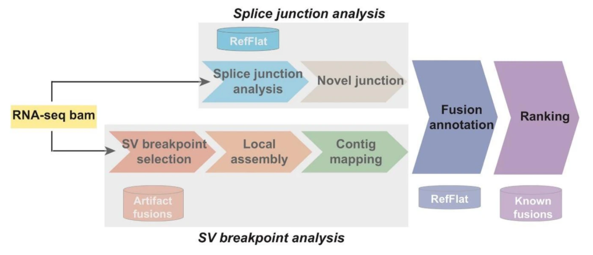

CICERO 0.3.0


CICERO (Clipped-reads Extended for RNA Optimization) is an assembly-based algorithm to detect diverse classes
of driver gene fusions from RNA-seq.
Explore the docs »
Read the paper »
Request Feature
Report Bug
⭐ Consider starring the repo! ⭐
To discover driver fusions beyond canonical exon-to-exon chimeric transcripts, we develop CICERO, a local assembly-based algorithm that integrates RNA-seq read support with extensive annotation for candidate ranking. CICERO outperforms commonly used methods, achieving a 95% detection rate for 184 independently validated driver fusions including internal tandem duplications and other non-canonical events in 170 pediatric cancer transcriptomes. 
Running CICERO
Add the src/scripts directory to your system PATH variable. Add the src/perllib and dependencies/lib/perl directories to your system PERL5LIB variable.
Then invoke the CICERO wrapper as
Cicero.sh [-h] [-n ncores] -b bamfile -g genome -r refdir [-j junctions] [-o outdir] [-t threshold] [-s sc_cutoff] [-c sc_shift] [-p] [-d]
-p - optimize CICERO, sets sc_cutoff=3 and sc_shift=10 [default true]
-s <num> - minimum number of soft clip support required [default=2]
-t <num> - threshold for enabling increased soft clip cutoff [default=200000]
-c <num> - clustering distance for grouping similar sites [default=3]
-j <file> - junctions file from RNApeg
-n <num> - number of cores to utilize with GNU parallel
-d - disable excluded regions file use
ncoresis the number of cores to be run on (with GNU parallel).bamfileis the input bamfile mapped to human genome builds GRCh37-lite or GRCh38_no_alt. Contact us if your bam is based on other reference version.genomeis eitherGRCh37-liteorGRCh38_no_alt. CICERO only support the two human reference genome versions.refdiris the reference file directory specific to CICERO. See Reference Files below.junctionsis the junctions file output from RNApeg. See Generate Junctions below. CICERO can detect fusion by analysis of splice junction reads. If this option is omitted, fusions generated by small deletions may be missed as these events may lack the soft-clipped reads.
The final CICERO fusion result file will be located at <outdir>/CICERO_DATADIR/<sample name>/final_fusions.txt. Use the following guide to interpret the results.
To visualize CICERO fusion output you can load the final fusion output file at https://proteinpaint.stjude.org/FusionEditor/.
Dependencies
- GNU parallel
- Samtools 1.3.1
- Cap3
- Blat
- Java 1.8.0
- Perl 5.10.1 with libraries:
- base
- Bio
- Carp
- Compress
- Cwd
- Data
- DBI
- diagnostics
- Digest
- English
- enum
- Exporter
- File
- FileHandle
- List
- POSIX
- strict
- Sys
- Tree
- warnings
Running with Docker
CICERO can be run with Docker. To begin, build the Docker image using the Dockerfile in this repository.
docker build -t stjude/cicero:0.3.0 .
Then invoke the CICERO wrapper using Docker.
docker run -v <path to reference directory>:/reference stjude/cicero:0.3.0 Cicero.sh [-n cores] -b <bam file path> -g <genome, e.g. GRCh37-lite> -r /reference -o <output directory> [-j junctions file] [-p] [-s int] [-t int] [-c int]
Running with St. Jude Cloud
CICERO is integrated in the St. Jude Cloud Rapid RNA-Seq workflow. To run CICERO in St. Jude Cloud, access the tool through the platform page. Documentation for running and interpreting results is available in the user guide.
Generate junctions file with RNApeg
RNApeg is required to generate a junctions file for use by CICERO. You can get RNApeg from both Docker and Singularity. Once RNApeg is complete, the *.junctions.tab.shifted.tab file can be provided to CICERO using the -j argument.
Running RNApeg via Docker:
docker run -v <outdir>:/results mnedmonson/public:rnapeg RNApeg.sh -b bamfile -f fasta -r refflat
Running RNApeg via Singularity:
singularity run --bind <outdir>:/results docker://mnedmonson/public:rnapeg RNApeg.sh -b bamfile -f fasta -r refflat
Downloading reference files
Reference files are required to run CICERO. They can be found at the following location: * GRCh37-lite: https://doi.org/10.5281/zenodo.3817656 * GRCh38_no_alt: https://doi.org/10.5281/zenodo.3894739
Supported Genome Version
CICERO currently supports GRCh37-lite and GRCh38_no_alt.
Demo
A demo of CICERO can be found at the following location: * https://www.stjuderesearch.org/site/lab/zhang/cicero
Citation
Tian, L., Li, Y., Edmonson, M.N. et al. CICERO: a versatile method for detecting complex and diverse driver fusions using cancer RNA sequencing data. Genome Biol 21, 126 (2020). https://doi.org/10.1186/s13059-020-02043-x
License
Copyright 2020 St. Jude Children's Research Hospital
Licensed under a modified version of the Apache License, Version 2.0 (the "License") for academic research use only; you may not use this file except in compliance with the License. To inquire about commercial use, please contact the St. Jude Office of Technology Licensing at scott.elmer@stjude.org.
Unless required by applicable law or agreed to in writing, software distributed under the License is distributed on an "AS IS" BASIS, WITHOUT WARRANTIES OR CONDITIONS OF ANY KIND, either express or implied. See the License for the specific language governing permissions and limitations under the License.